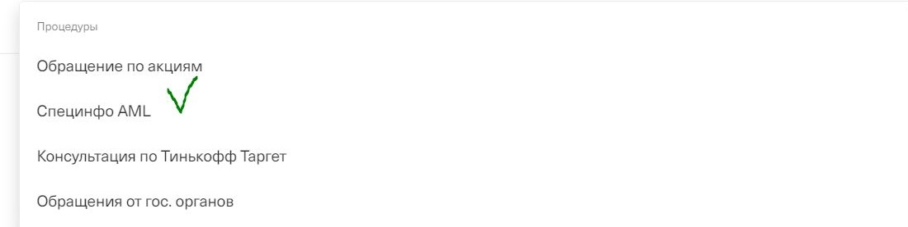

AML (Anti-Money Laundering)
Что это такое и как с этим работать?

AML
Давай начнем с небольшой теории. Что же такое AML?
Простыми словами - это борьба с легализацией денег, которые получены преступным путем — «отмыванием денег». Под легализацией в этом случае понимаются действия, скрывающие источник происхождения денежных средств с целью придания им законного характера.
AML включает в себя комплекс мер, которые направлены на предотвращение использования финансовой системы страны или конкретного финансового учреждения.
Как ты правильно понимаешь, никакое государство, либо организация не хочет брать на себя риск вовлечения в такие схемы пособничества терроризму.
Давай изначально посмотрим какие механизмы и документы выработало государство для работы с AML ->

Меры по борьбе с отмыванием денег со стороны государства.
Федеральный закон от 07.08.2001 N 115-ФЗ
Если ты обработал хотя бы один кейс с BAML - ты уже видел упоминания таинственного 155-фз. Но о чем он? Что там есть интересного то именно для тебя?
про 115фз и его интересные выжимки. Вроде этой Впервые упоминаем росфинмониторинг.
Следующий слайд

Меры по борьбе с отмыванием денег со стороны нашего банка.
Упоминаем про отдел финансового мониторинга нашего банка
Вкратце объясняем чем занимается, без конретики и внутренней кухни
На мой взгляд логичнее всего сюда впихнуть понятие неподтвержденного денежного потока
На следующем слайде продолжаем про нашу борьбу с отмыванием денег в виде пунктов УКБО.
Мер по борьбе с отмыванием денег со стороны нашего банка много не бывает.
Говорим про пункты укбо.
Также делаем акцент на пунктах, которые указывают на причины того, почему клиент обязан предоставить документы
Заканчиваем слайд клиффхэнгером про "ограничении дистанционного обслуживания"
Блокировка или ограничение?
Давай мы запомним с тобой прямо сейчас. BAML - Это ограничение ДБО.
Почему важно говорить именно так? Почему не блокировка? После вынесения решения об ограничении ДБО клиент должен понять, что его деньги не удерживаются и не блокируются банком.
Одной из самых частых причин негатива после вынесения решения о BAML является непонимание клиентом ситуации. Поэтому для нас с тобой крайне важно дать понять клиенту, что решение об ограничениях было принято после комплексной проверки и клиент может вывести деньги со счета Тинькофф, предоставив свои реквизиты в другом банке.
Причем нам важно сказать только то, что от нас требуется и не нагружать клиента лишней информацией. Руководствоваться информацией из СИ и процедур.
Давай посмотрим как же все таки работать то с этим.
Как обрабатывать?
Прежде всего давай разберемся со Специнфо
Если ты видишь вот это СИ:

То перед тобой как раз кейс с BAML.
Дальше уже нужно разобраться с процедурами, которые нам помогут.
Как обрабатывать?2
Разберем с какими процедурами работать.
Давай запомним - как только ты понимаешь, что перед тобой BAML - ищи именно эту процедуру:
Она в свою очередь и даст тебе понять что же дальше делать, в ней всегда указан правильный порядок действий.
Теперь мы взглянем на самые распространенные вопросы в этой теме.
"Мне наложили ограничения. Что мне делать?"
Разбираем самый распространенный кейс с только что вынесенным решением о BAML и растерянным клиентом.
Ты уже убедился, что перед тобой именно такого рода кейс, взглянув на Специнфо .
* нужно доделать и скинуть скрин того звучат ограничения*.
После скрина переходим к выводу средств.
"Я хочу вывести свои средства. Вот мои реквизиты"
Разбираем порядок действий для вывода средств в другой банк по BAML
Напоминаем сотруднику про то, что нужно уточнить у клиента и убедиться, что счет открыт именно на его имя
.
"Какие еще ограничения? Незаконнно! Пересмотрите решение."
Разбираем кейс с недовольным клиентом, который просит обоснований и пересмотра
Даем понять, что решение вынесено корректно. Повторяем основания укбо.
Упоминаем о возможности сделать запрос на пересмотр решения при сильном негативе клиента(нужно обсудить с вами).

Быстрый блиц или выжимка
Здесь можно было бы в формате фактов запихнуть инфу про то, что делать с инвестиционным счетом?
А вы передаете информацию всем банку инфу про то, что у меня тут бамл в тинькове?
Что делать если нет счета в другом банке?
Если перевод вернулся после закрытия? (платежное поручение и справку об операции, не так написано имя в сбере 100%)
Что делать с входящими переводами?
Полагайся на процедуру. В ней всегда актуальная информация.